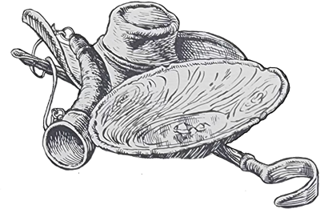
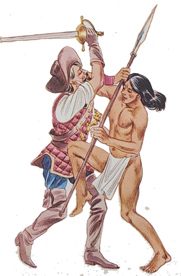
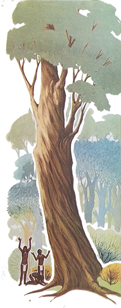
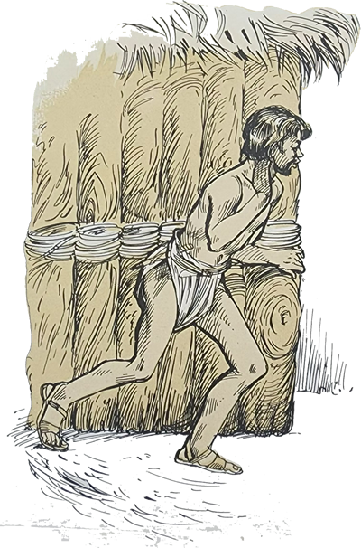
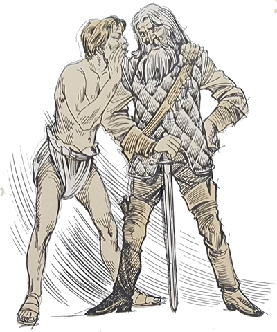
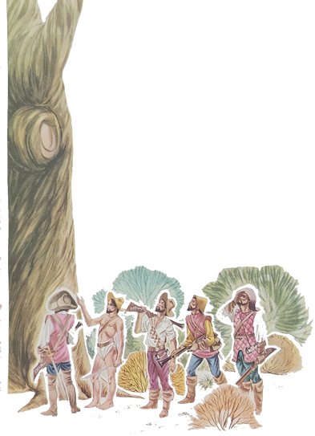
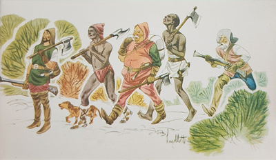
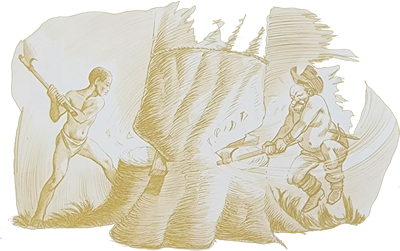
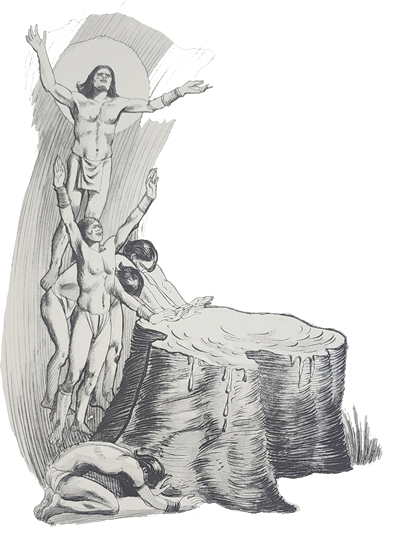
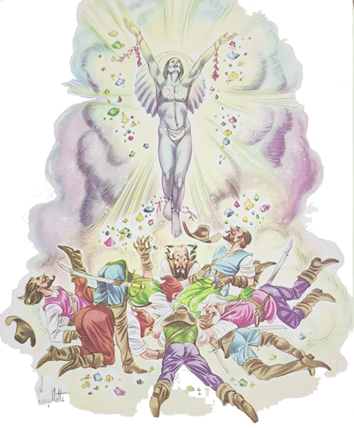

Talvez aquela pedra fosse um diamante – ponderou Iberê, desanimado.
- É bem capaz – concordou Carlinhos, ambos sentados na beira da calçada do hotel, esperando a saída do Arrelia e dos outros companheiros.
- Se você não tivesse sido tão egoísta – disse Iberê – a pedra agora estaria conosco.
Carlinhos estranhou as palavras do amigo e respondeu:
- Egoísta foi você! Não queria ficar com a pedra sozinho?
Depois de refletir um pouco, Iberê finalizou:
- Não adianta falar mais nisso. Nós dois fomos culpados. Agora a pedra está perdida para sempre.
Caíram em silêncio e assim ficaram até que os outros saíram. O Arrelia estranhou a tristeza dos dois meninos e dirigiu-se a eles:
- Mas o que é isso? O que está acontecendo? Que “cauras” de tristeza! De desânimo! Vamos! Vamos passear que o tempo não espera por ninguém e a vida é breve!
Sem abandonar as expressões que causaram estranheza ao Arrelia, os dois meninos levantaram-se e reuniram-se aos outros.
- Afinal o que está acontecendo com vocês? – insistiu o Arrelia, vendo que os dois continuavam aborrecidos.

Iberê contou o motivo. O Arrelia deu risada:
- Não era diamante, não. Vocês pensam que é assim tão fácil encontrar diamantes? Tanta gente já andou atrás deles que hoje não é brincadeira encontrar-se um.
- Seria bom se os diamantes dessem em árvore, não, Arrelia? – disse Iberê.
- Aí os diamantes não teriam o valor que tem. Mas por falar em árvore, uma estória conta que os diamantes são pedaços de uma árvore sagrada para os índios puris, a acaiaca. O mesmo nome da princesa da outra estória, não é “verdaude”?

Continuando o passeio, o Arrelia começou a contar-lhes a lenda dos diamantes:
- Aconteceu no tempo em que os bandeirantes entravam pelos sertões de Minas, atrás de ouro. O ouro era o principal objetivo mas havia outros, como, por exemplo, escravizar os índios. Atacavam as aldeias que encontravam e as destruíam sem piedade. Os índios que conseguiam sobreviver eram transformados em escravos. Como os bandeirantes agiam sempre da mesma forma, sua fana chegou até às aldeias que ainda não conheciam. Assim, quando os índios destas aldeias percebiam a aproximação dos bandeirantes, tratavam de defender-se o melhor que podiam, pois a derrota significava escravidão.
Uma vez, um grupo de bandeirantes acampou perto do local onde viviam os índios puris. Os índios concentraram-se numa colina, na qual majestosamente se erguia a árvore chamada acaiaca.
Para os índios puris, a acaiaca era de enorme importância. Era a árvore da vida, e dela recebiam as forças necessárias para a luta. Faltasse-lhes a acaiaca e pereceriam. Todos eles a adoravam. Sob a tranquilidade de sua sombra o conselho se reunia para as grandes decisões que jogavam o destino da tribo.
Logo que uma criança índia começava a ter entendimento, seu pai levava-a à acaiaca e dizia-lhe:
- Veja, admire essa grande e bela árvore! É a mãe de nosso povo. A ela devemos tudo o que temos. É ela que nos dá inspiração para decidirmos nossa sorte nos grandes momentos de nossa vida. Dá forças ao jovem guerreiro para que vença, e sombra protetora ao ancião para que repouse em paz depois de tanta luta.
A criança crescia amando e respeitando a bela e imponente árvore. Graças à acaiaca, os índios sentiam-se unidos, irmanados, constituindo uma só família.
Mas como eu estava dizendo, os índios puris, ao perceberem a presença dos bandeirantes, refugiaram-se na colina onde estava a árvore sagrada. Dali partiam grupos e atacavam de surpresa os inimigos, que por sua vez os repeliam com seus arcabuzes.
- Arcabuzes? – O que é isso, Arrelia? – quis saber Carlinhos.
O Arrelia esclareceu:
- Arcabuz é o nome de uma antiga arma de fogo, de cano largo e curto.
Depois continuou:
- Aqueles ataques e contra-ataques prosseguiram por algum tempo. Os bandeirantes já estavam aborrecidos e andavam procurando um modo de exterminar os indígenas, que os impediam de procurar tranquilamente o ouro que tanto desejavam.
Um dia o chefe dos brancos promoveu uma reunião para ver se alguém lhe dava uma ideia de como proceder.

- Assim não podemos continuar – disse ele aos seus comandados. Precisamos de calma e segurança para prosseguirmos com nosso trabalho. Sei que há muito ouro espalhado por esta região, porém não podemos dar um passo sem que sejamos atacados por esses selvagens. Tenho esperança de que encontremos uma solução. Quem é capaz de apresentar uma ideia?
Um deles se manifestou:
- Acho que o único recurso é efetuarmos um ataque maciço contra eles e liquidá-los de uma vez.
- Não dará certo – respondeu o chefe. Eles são muitos e nós somos poucos. Acabaríamos sendo vencidos.
- Mas não se esqueça de que há uma grande diferença entre as nossas armas e as deles – tornou o outro. Eles usam flechas e nós usamos arcabuzes. Nem há comparação!

- Mesmo assim – disse o chefe pensativamente. Não podemos esquecer a situação privilegiada em que se encontram. Eles estão no alto da colina e nós embaixo. Até que conseguíssemos chegar lá estaríamos todos mortos apesar de nossos arcabuzes.
Todos foram obrigados a concordar com a argumentação do chefe.
Após um prolongado silêncio em que todos se puseram a meditar, um outro disse o seguinte:
- Olhem! Já sei o que fazer! Uma vez que não é possível vencê-los, vamos propor-lhes sociedade no ouro que encontrarmos! Que acham?
Todos deram risada. Depois o chefe disse:
- Você pensa que estamos negociando com gente civilizada? Eles pouco estão ligando para o ouro! O que desejam é que nos afastemos daqui para poderem viver em paz! Tem medo de serem escravizados por nós! De qualquer modo, não vamos sair daqui. Se eles pensam que vamos abandonar assim o nosso ouro, estão enganados. Uma hora ou outra havemos de encontrar um modo de nos livrarmos deles.
- Como os bandeirantes gostavam de ouro, não? – admirou-se Marisa.
- Se gostavam! – exclamou o Arrelia. Por causa do ouro eram capazes de fazer qualquer coisa! E foi assim que nasceram muitos povoados que depois se transformaram em cidades, algumas hoje bem importantes.
Mas conforme o chefe dos bandeirantes resolvera, eles permaneceram onde estavam e continuaram o seu “trabaulho”. Os ataques e contra-ataques prosseguiram e apesar disto os bandeirantes não desistiam.

Por sua vez, os índios já estavam cansados de tolerar a presença dos seus persistentes inimigos e começaram a preparar um formidável ataque, que deveria liquidar de uma vez os bandeirantes:
- É uma grande humilhação para nós a presença desses homens em nosso território – disse um guerreiro. Vamos unir nossas forças e, com a ajuda de nossa deusa, a acaiaca, conseguiremos derrotá-los.
- Muito bem – disse outro. Comecemos já os preparativos. Se demorarmos, eles acabarão por fortificar-se de tal forma que não mais nos será possível vencê-los.
Logo reinava no acampamento dos índios o maior movimento. Os guerreiros discutiam o melhor modo de ataque e o momento mais favorável. Acabaram por concordar que atacariam na manhã seguinte, tão logo clareasse. Foi quando o grande chefe Cururupeba se lembrou de um casamento que ia haver dentro de poucos dias:
- Não convém entregarmos com lutas e preocupações a alegria que precederá a festa. Depois do casamento faremos o ataque aos brancos.
A palavra do chefe não podia ser desobedecida e os guerreiros foram obrigados a se conformar.
Entre os índios vivia um mestiço que resolvera trair os seus amigos em troca de algum favor dos bandeirantes. Procurou-os e contou-lhes o que acontecia. Os bandeirantes ficaram alarmados. De nenhum modo conseguiriam resistir a um ataque maciço dos indígenas. O que fazer? O mestiço disse-lhes:

- Por ocasião do próximo casamento que vai haver na tribo, todos os índios se retirarão para as margens do rio, onde será realizada a grande festa. Esta será a oportunidade para vocês conseguirem a vitória.
- Não entendo – respondeu o chefe dos bandeirantes. O que tem isso?
O mestiço deu um sorriso e respondeu:
- É simples. Na colina há uma árvore que é uma verdadeira deusa para eles. A crença que possuem nela é o que os mantém unidos e lhes dá forças para a luta. Se essa árvore lhes faltasse, eles não mais se entenderiam e acabariam guerreando entre si, compreenderam? Depois poderiam ser derrotados por vocês.
Os bandeirantes nem piscavam, tanto era o interesse com que escutavam as palavras do mestiço, cujo nome indígena era Peropiranga, que quer dizer branco e vermelho, porque ele possuía sangue europeu e índio.
- Que engraçado! – interrompeu Marisa.
- Pois é. Os nomes indígenas são muito curiosos – disse o Arrelia e continuou:
- O mestiço explicou aos bandeirantes como deviam proceder:

- Tão logo eles tenham ido, vocês sobem à colina e derrubam a árvore sagrada. Quando voltarem e virem o que aconteceu, sucederá o que eu lhes disse: lutarão entre si, e os sobreviventes serão facilmente derrotados.
Os bandeirantes não sabiam o que fazer de tanto contentamento: sorriam, abraçavam-se, abraçavam o mestiço e o cumprimentavam.
Depois dos momentos de euforia, o chefe perguntou ao mestiço:
- E como saberemos que eles não estão mais na colina? Daqui não dá para ver!
- Será na próxima Lua Cheia. Mas não se incomodem que darei um jeito de avisá-los – respondeu o mameluco.
- O que?! – surpreendeu-se Carlinhos. Ele tinha outro nome?
- Mameluco é a denominação que se dá ao mestiço de branco com índio – esclareceu o Arrelia, rindo da surpresa do menino. Mas o seu nome verdadeiro era Tomás Bueno.
- Bem – continuou o Arrelia – o mestiço foi embora e os bandeirantes ficaram na expectativa do aviso prometido. Como os índios estavam agora “preocupaudos” com os preparativos para a festa, nem mais os pequenos ataques realizavam contra os brancos, e estes aproveitavam ao máximo a oportunidade para garimpar sossegadamente.
Surgiu a Lua Cheia, e o mestiço veio correndo confirmar a partida dos índios para as margens do rio.

Alguns bandeirantes ficaram guardando o acampamento mas a maioria tomou a direção da colina. Apesar da confirmação do mestiço e do silêncio que demonstrava estar deserto o lugar, os invasores caminhavam atentos, desconfiados. Não fosse uma cilada na qual iam cair igual mosca em teia de aranha. Não era impossível o mestiço, haver-lhes pregado uma esperta mentira. Interessante que só agora pensavam nesta possibilidade.
Foram-se aproximando com exagerada cautela, os arcabuzes prontos para o tiro. Alguns dos homens levavam machados para abaterem a secular acaiaca, a deusa sagrada dos índios puris.
Logo verificaram que o mameluco não os havia ludibriado. Percorreram toda a colina e não viram sequer sombra de um índio. Todos tinham seguido para as margens do rio onde se realizaria o ritual do casamento. Lá demorariam o tempo suficiente para os bandeirantes cumprirem a sua intenção. Voltaram-se pois para a acaiaca e não conseguiram reprimir a emoção que sentiam diante da árvore sagrada. Realmente era linda e majestosa. A Luz cheia iluminava-a serenamente e dava-lhe misteriosa tranquilidade que convidava a falar baixo, a meditar. Mas isto não foi suficientes para modificar a vontade dos invasores, que estavam dispostos a qualquer ação para vencerem aos seus odiados inimigos.

A uma ordem do chefe, os que empunhavam os machados principiaram abatê-la. As pancadas se sucediam soando lugubremente no silêncio da noite. Bastaram alguns momentos para destruir o que a Natureza levara tantos anos para criar. A deusa dos índios tombou pesadamente, turvando o ar com a poeira levantada pelo forte impacto. Depois o ar ficou novamente límpido e eles puderam admirar com um sorriso o resultado de seu trabalho. Instintivamente percebiam que junto com a acaiaca tombara o espírito de concórdia e compreensão que mantinha unidos aqueles selvagens. Só restava esperar. Os bandeirantes voltaram ao acampamento.
Algum tempo depois, os índios regressavam da festa. Vinham contentes, rindo e falando, em contraste com a seriedade de Cururupeba, que marchava à frente com imponência e gravidade, preocupado com o combate de vida ou morte que deveria travar-se com os invasores.
De repente, a um sinal seu, todos pararam.
- Olhem! – disse ele, apontando para o lugar onde antes se erguia a árvore sagrada. Que aconteceu à nosso deusa?
Ficaram todos “paralisaudos” pela surpresa. Só se recobraram ao verem seu chefe correr em direção ao lugar em que antes estava a acaiaca. Correram também. Foi um gemido só quando deram com a árvore sagrada, a deusa que os protegia, tombada no chão. Não podiam compreender o que acontecera.

- Foram os brancos – disse Piracaçu, o pajé. Foram os brancos que destruíram nossa deusa!
O chefe ordenou que os profanadores fossem atacados imediatamente. Seriam aniquilados sem piedade. Pagariam o que tinham feito. Com gritos furiosos, os guerreiros acorreram para a luta. Aí o pajé falou:
- Jamais conseguiremos derrotá-los.
- Por quê? – estranhou o chefe.
- Porque seremos derrotados por nós mesmos.
- Como assim?
- Sem a proteção de nossa deusa, não teremos mais união nem paz entre nós. Haverá inveja entre as mulheres e disputa entre os guerreiros. Faremos a nós mesmos o que os brancos não conseguiram fazer.
O que o pajé disse começou a acontecer imediatamente: os guerreiros, que se davam como bons irmãos, puseram-se a brigar como inimigos. As mulheres xingavam-se e batiam-se sem saber por que o faziam. Logo era uma luta só. Poucos foram os sobreviventes.
Quando o traidor, o mestiço, contou aos bandeirantes o que acontecera, eles não esperavram para atacar. Não encontraram nenhuma resistência, e os pobres índios que se salvaram fugiram para a mata a fim de não serem escravizados. Finalmente os brancos eram donos da região. Agora podiam procurar em paz o seu ambicionado ouro.
Estavam eles ali na colina quando apareceu inesperadamente a figura do pajé. Magro, sujo pela batalha, com o ódio “estampaudo” no rosto, inspirava medo. Correu para a árvore tombada e a um gesto seu ela pegou fogo. O pajé entrou no meio das labaredas e gritou aos bandeirantes:
- Por causa de sua ambição destruíram uma tribo. Querem riquezas! Pois nossa deusa lhes dará tanta riqueza que nem poderão acreditar! Mas esta mesma riqueza há de destruí-los!
Em pouco tempo o pajé desapareceu nas chamas da acaiaca. Em seguida desabou fortíssimo temporal. Depois a terra tremeu. Os bandeirantes não conseguiam mexer-se tão aterrorizados estavam. Aí a árvore sagrada explodiu. Suas brasas foram arremessadas por todos os cantos e se transformaram em diamantes.
Assim que perceberam o que havia acontecido, os bandeirantes dispararam por ali, cada um querendo pegar mais pedras preciosas do que os outros. Saiu uma briga entre eles e não sei se algum conseguiu salvar-se.